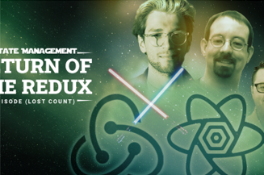

Kolby Sisk in Udacity Eng & Data
React state management in 2022- Return of the Redux
At the beginning of the year if you told me I'd be publishing a recommendation to use Redux I would have laughed in your face. Yet her...

Kolby Sisk in Udacity Eng & Data
At the beginning of the year if you told me I'd be publishing a recommendation to use Redux I would have laughed in your face. Yet her...
